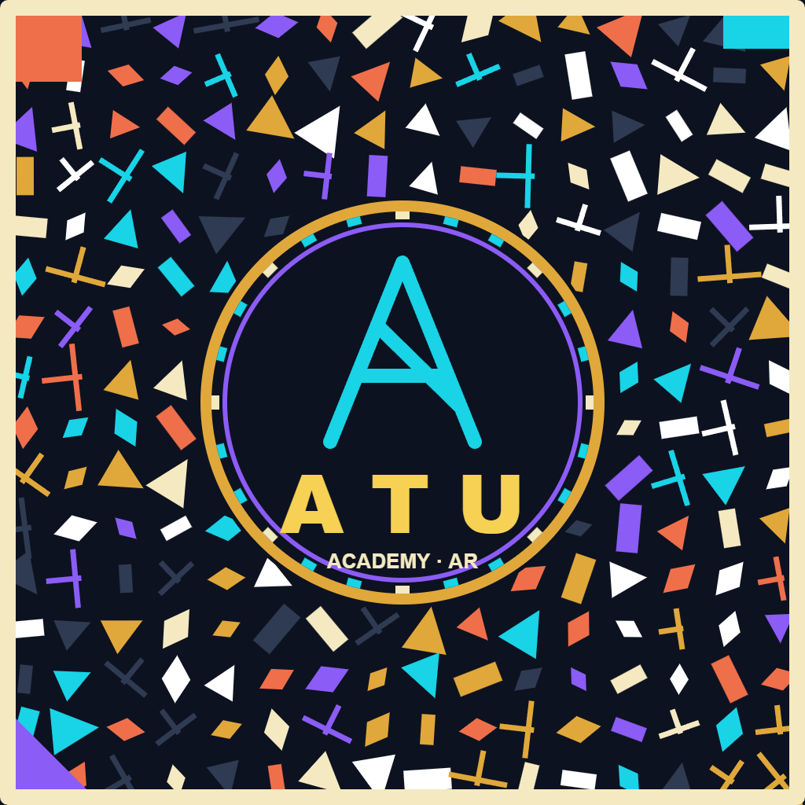

ACADEMY · WEBAR
AR-бестиарий ATU

Наведи камеру телефона на эмблему Академии — и существа из игры появятся прямо перед тобой.
- Открой маркер на другом экране или распечатай его.
- Нажми «Запустить AR» и разреши доступ к камере.
- Коснись существа, подойди ближе, смени модель.